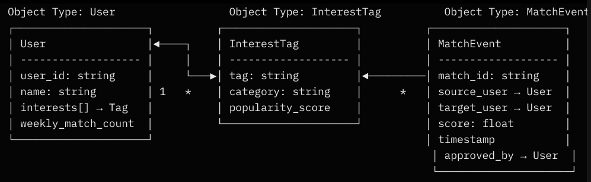
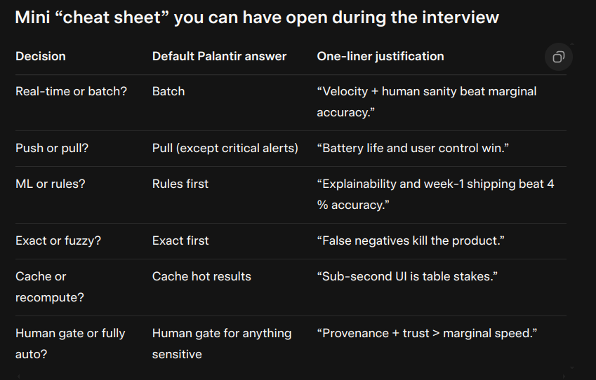
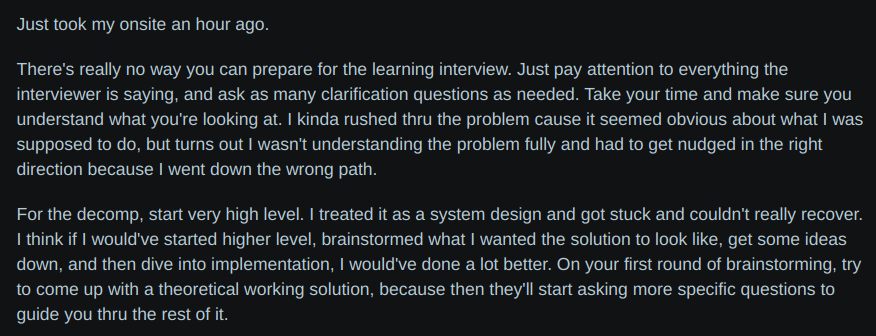
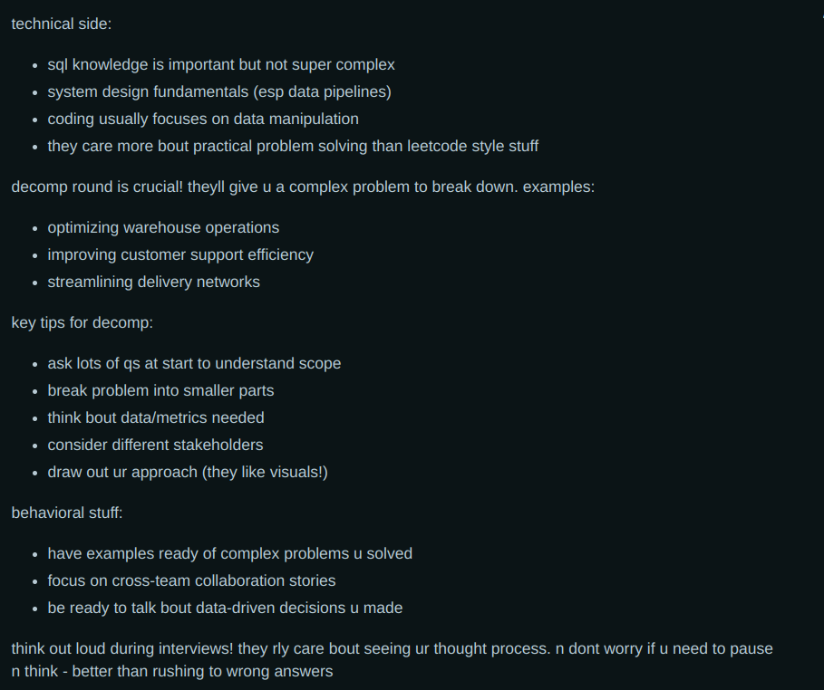
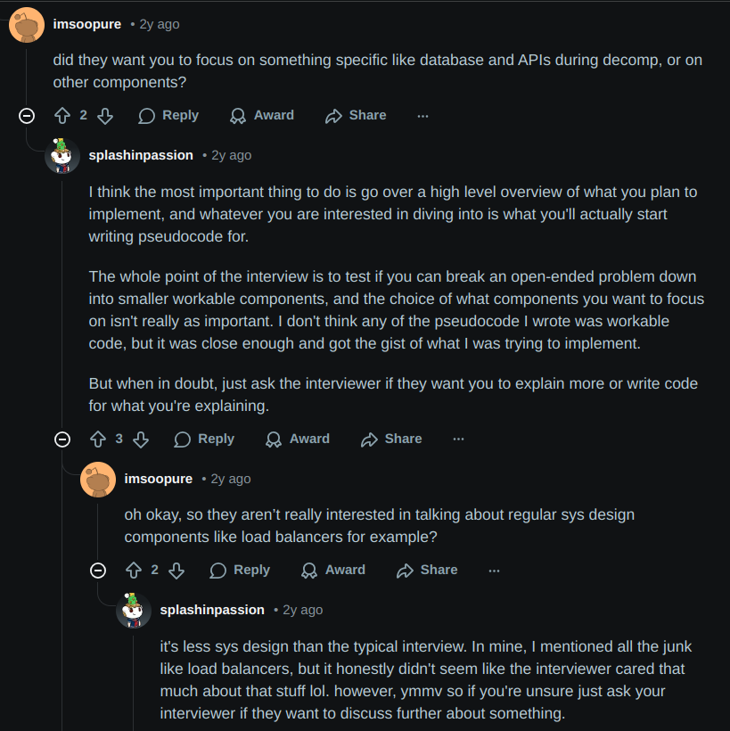
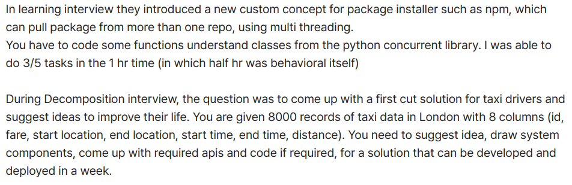

Decomposition Interview Prep.
About
Palantir is looking for whether you can break a messy, real-world problem into shippable pieces, while talking through it as if you are consulting a customer (like a stakeholder meeting).
Decomp. prompts are always open-ended and inspired by real customer problems that are vague enough to test creativity but grounded in domains such as government, health, etc. They are meant to start broad and then evolve based on your responses. There is no explicitly “right” answer; they are looking at how you decompose and prioritize. Think of it not as full system design but more so an idea-to-MVP roadmap - brainstorming and then trimming it to shippable.
Build your design around the needs of the customer.
Example prompts:
- Build a parking lot management system
- Design a system where users can share their interests
- Design a ride-hailing app like Uber
- Help a non-profit allocate puppies for loneliness therapy
- Reduce traffic deaths in a city using camera data and 311 calls
- Match organ donors to recipients in real-time
Key General Tips
- Justify every decision you make - why are you doing it this way?
- Be familiar with pros and cons of your approach.
- Your design should be focused on USER NEEDS. Think consulting.
- Make decisions confidently.
- You should be driving the interview.
Step-by-Step
- Understand the problem (5 mins)
- Clarify aggressively to fully understand the problem. It starts off vague for a reason.
- Users: Who is the primary user? Is this for an internal team or will it be public-facing?
- e.g., the mayor’s office, traffic engineers (so they can make fixes), and possibly an eventual dashboard
- Success metric: How should we define a success metric?
- e.g., a 30% reduction in nighttime pedestrian/cyclist fatalities (not just total crashes)
- Constraints: Are there any hard constraints?
- e.g., privacy laws on faces and license plates
- Control: What do we actually have control over?
- e.g., we can’t control lights or signs directly
- Ethics
- e.g, are we allowed to store video long-term, or must we delete after processing?*
- Users: Who is the primary user? Is this for an internal team or will it be public-facing?
- Clarify aggressively to fully understand the problem. It starts off vague for a reason.
- Brainstorm, Scope, and Prioritization (5-10 mins)
- Idea explosion: list a bunch of features and functionalities
- Scope the problem: what is the time-frame? What are the most important functions of the system that should be shipped ASAP?
- Prioritize and de-prioritize based on scope; make sure to justify.
- A general template that works for most cases:
[1 Users / Devices] → [2 Front-end App] → [3 AIP / Matching Engine] → [4 Foundry Ontology + Data] ↔ [5 Dashboard / Actions]- Users/Devices: the USERS or CUSTOMERS who will interact with the product
- Front-end app: a lightweight frontend (e.g., Palantir’s Slate, or even just a Google Form) that collects inputs and shows results
- Slate enables developers to construct dynamic and responsive applications with a custom design using a drag-and-drop interface, reducing development time and cost. With minimal coding skills, developers can quickly create operational applications, interactive dashboards and custom landing pages with a custom style.
- AIP/Core logic/Matching engine: the brain of the system; an AIP Logic App or a nightly Code Repository pipline that runs the actual scoring/matching/allocation logic that we designed
- Foundry Ontology + Data: all raw data lands in Foundry datasets; we turn all important things into ontolofy objects so that everything is linked and auditable
- Output/Dashboard/Actions: results go to a Contour dashboard; the results here will also complete a feedback loop that feeds data back into Foundry for v2 learning
- Technical breakdown (15-25 mins).
- How will the system work end-to-end?
- Decompose the system into chunks - what is the high-level flow?
- Draw a flowchart.
- Deep dive into 1-2 key components/chunks; keep it functional.
- Think about edge cases and tradeoffs
- In pretty much any case, you’ll only ever need to deep-dive into one of three chunks:
The scoring/matching/allocation function: a large majority of prompts (puppy matching, organ matching, traffic) involve this functionality in some way.
# runs every night as an AIP Logic App or Code Repository pipeline def match_score(source_user: User, candidate: User) -> float: source_set = set(source_user.interests) candidate_set = set(candidate.interests) if not source_set or not candidate_set: return 0.0 # Jaccard similarity (score btwn 0-1) # intersection / union overlap = len(source_set.intersection(candidate_set)) union = len(source_set.union(candidate_set)) base_score = overlap / union # OR an extension upon Jaccard: TF-IDF # would require all users' sets tho to infer uniqueness # boost score if exact high-value tag match (e.g., "rare diseases") if "rare diseases" in source_set.intersection(candidate_set): base_score += 0.3 # "penalty" if candidate has too many matches this week (prevent spam) weekly_matches = candidate.weekly_match_count() load_penalty = min(weekly_matches / 10.0, 0.5) return max(base_score - load_penalty, 0.0) # final ranked list candidates = [u for u in all_users if u.id != source_id] ranked = sorted(candidates, key=lambda u: match_score(source_user, u), reverse=True)[:5]- The above function produces a matching/similarity score between two user sets. The intention is that, if a score is above a certain threshold, we consider it a match. Take consideration of the weight of false positives and false negatives for the system. If false positives are more significant (should be reduced), then set the threshold high (0.8-0.9). If false negatives are more significant, set the threshold low (0.5-0.6).
- False positive: e.g., recommending a user another user who only minimally overlaps.
- False negative: e.g., two users never discover each other on the interest-sharing app, hypothetically could be really costly bc they could’ve solved major problems together
- The above function produces a matching/similarity score between two user sets. The intention is that, if a score is above a certain threshold, we consider it a match. Take consideration of the weight of false positives and false negatives for the system. If false positives are more significant (should be reduced), then set the threshold high (0.8-0.9). If false negatives are more significant, set the threshold low (0.5-0.6).
The data model/ontology objects: is a major part of the system if the prompt is about linking messy things (diseases, wildfire resources)

alt text - User obj: one per person. Linked back to every interest tag that they’ve claimed.
- InterestTag obj: shared across users; can have a popularity counter (for the decay penalty and TF-IDF)
- MatchEvent obj: one is created every time AIP recommends someone; will store the raw score, the final score following the decay, and who approved/rejected it and why.
- Human-in-the-loop + auditability: should always be mentioned, just briefly. Until a human clicks “approve” or “reject,” the action remains in the queue.
e.g., every recommendation made (based on the score produced by the function), should go through an AIP approval gate.
if match_score > 0.8: create_review_task(assignee="team_lead", item=candidate)Done in AIP bc every human click (approve, reject, edit) is automatically written to the Foundry ontology and include who/when/why data.
Worth emphasizing that ensuring accuracy of predictions would be incredibly important in government applications - hence why having a human in the loop is vital, at least at the beginning.
- Polishing and discussion of risks, ethics, scale, rollout, and future steps
- Risks and Ethics: any concerns with the current implementation?
- Scale: will the current system be able to handle increasing amount of users or traffic?
- Rollout: can a minimum viable product (MVP) be shipped in time? What enhancements can be made over time?
- Future steps: what features did we de-prioritize earlier?
Concepts
- Scalability: designing for scalability ensures that your application can handle higher workloads without compromising performance. This is essential for systems facing growing demand, as it ensures that they can adapt and maintain efficiency. Failing to plan for scalability can lead to performance degradation, user dissatisfaction, and lost opportunities.
- Vertical scaling/scaling up: adding more resources, such as CPU or memory, to a single server. This boosts performance but is limited by physical constraints and costs.
- -: Costs, Physical constraints; at a certain point, adding more resources does not yield proportional benefits
- Horizontal scaling/scaling out: adding more servers to the system. This offers more flexibility and is more cost-effective for increased workloads - by distributing the load across multiple servers, the system can dynamically adjust resources to meet demand.
- -: Load balancing, Data consistency
- Vertical scaling/scaling up: adding more resources, such as CPU or memory, to a single server. This boosts performance but is limited by physical constraints and costs.
System Design
(Palantir’s decomp. interviews are somewhat adjacent to system design interviews, but more so a technical case study.)
In a system design interview, interviewers want you to:
- Translate an ambiguous problem statement into concrete technical requirements
- Craft an architecture and design that satisfies those requirements
- Articulate and defend your design decisions throughout the discussion
Some key concepts of system design:
- Batch vs Real-time processing:
- Batch: collects and processes data in large, e.g., running something once a night.
- Likely best if building something with limited time
- Real-time: handles data as it arrives, providing immediate results
- Batch: collects and processes data in large, e.g., running something once a night.
- Exact vs Approximate/Fuzzy Matching:
- Exact: requires an identical query
- Often easier to implement, so Exact matching is likely better if time is limited
- Approximate/Fuzzy: uses algorithms to find results that are similar but not identical, tolerating variations like typos or partial matches.
- Can be addressed using techniques such as embeddings, LLMs, Levenshtein
- Exact: requires an identical query
- Caching:
- Caching: a technique to store frequently-accessed data in a faster storage layer (e.g., RAM) to improve performance and scalability by reducing the need to access slower primary storage
- Sharding/Partitioning:
- Both are database scaling techniques that split data across many machines
- Sharding (i.e., horizontal scaling): distributes data across multiple servers
- Used to handle massive datasets by spreading the load
- Partitioning (i.e., vertical scaling): splits data within a single server
- Improves query performance and manageability by breaking data down into smaller and more manageable chunks on a single server
- Human-in-the-loop:
- Integrating human intelligence into an automated process to improve performance, reliability, and safety.
- High-risk decisions/recommendations should go through a human-in-the-loop approval (e.g., through an AIP approval gate to ensure hard enforcement with full provenance)
- Integrating human intelligence into an automated process to improve performance, reliability, and safety.
When thinking about system design tradeoffs, focus on the following three pillars:
- Mission impact: how does the decision impact the success metric?
- e.g., A increases earnings by 12%, B only 3%
- Human impact: how does the decision impact the users?
- e.g., B annoys users with constant notifications
- Velocity: how does the decision impact deployment speed?
- e.g, A ships in 4 days vs weeks for B
- Cost: how much does this decision cost?

Palantir’s Key Technologies
Palantir’s stack revolves around two main platforms: Foundry (the data operations backbone) and AIP (the AI accelerator that is built on Foundry). These tools are NOT isolated; they form an integrated “operating system” that turns messy data ito decisive actions, especially in high-stakes domains like government, health, and defense.
Everything ties back to the Ontology, which is a semantic “map” of real-world entities.
It may help to know the difference between Foundry (for commercial clients) and Gotham (geared towards government). Gotham is used in high-threadt situations (e.g., satellite data for threat tracking), and its primary users are intel or military (e.g., DoD for counterterrorism, targeting opponents in Ukraine) and is dominant in classified spaces.
Technologies:
- Ontology: a dynamic map of real-world objects (e.g., users, puppies) with properties, links, and full history/provenance.
- Use: modelling entities for queries/actions; ensures data is linked and auditable. Central to everything!
- “We’d model users and interests as Ontology objects in Foundry”
- Slate: a no/low-code UI builder for custom web or mobile apps.
- Use: creating user-facing interfaces, such as forms or dashboards, without needing frontend devs.
- “We can create a Slate form to survey employee interests (at least for the testing phase). Deploys in hours instead of days/weeks.”
- Contour: an interactive analytics/visualization tool (similar to Tableau).
- Use: building self-serve dashboards for non-tech users; uses data from Ontology.
- Code Repositories: a git-like environment for code, with AIP autocomplete and versioning.
- Use: writing and running pipelines, functions, and models; translates code across languages.
- “We can run the matching function every night in a Code Repo pipeline.”
Example
Prompt: Design a system where users can share their interests.
Understand the problem (5 mins)
- “Before a design anything, I want to make sure I fully understand the problem and its users.”
- “Who are the users? Internal employees, or will this be public-facing?”
- “Is there a specific domain that the users originate from?”
- “What is the primary goal of interests sharing? Team-building? Social media friending?”
- “How can we define a success metric for this system? The number of new connections/messages sent per week? Accurate interest matching?”
- “What are some constraints for this project? Mobile vs web? Security?”
- “Can we start internal-only and aynsc (email/Slack) or does it need to have a live feed?”
Brainstorm, Scope, and Prioritization (5-10 mins)
- For the 6-week MVP:
- Within scope: every morning you get an email with the top 5 colleagues who share over a given amount of interests, and the email will have a one-click “connect on Slack” button
- Outside scope: live feed, mobile app, chat, POSSIBLY semantic search (think Lockheed project; honestly this is doable within 6 weeks imo but not 1 week)
- For the 6-week MVP:
End-to-end flow diagram:
[Users] → [Slate web form] → [AIP Logic App] → [Foundry Ontology] ↔ [Contour + Email/Slack]
- Technical breakdown (15-25 mins).
- Breakdown of the scoring function - it is the riskiest piece of the system. If poor recommendations are made, nobody will trust or use the tool.
- Code sample is in above section.
- Explain the decay and the false negatives.
- “Decay prevents any single popular person from burning out”
- “We bias towards false negatives; false negatives are worse than false positives here because a single missed introduction can waste months of parallel work. False positives can lead to extra Slack pings but that is far less significant.”
- Explain the decay and the false negatives.
- Ontology objects:
- Diagram is in above section.
- “Everything is represented as a Foundry ontology object”
- Each MatchEvent is created instantly by AIP
- Human-in-the-loop lives here; a status cannot become approced until someone clicks Approve
- Full immutable provenance (origins): an auditor can find the origin of any connection
Polishing and discussion of risks, ethics, scale, rollout, and future steps
- Mention human-in-the-loop again; high-scoring matches automatically trigger an AIP approval task for the auditor/manager/etc.
- If the recommended target has a hgher clearance tier (e.g., if they are super high up, like a manager or whatever) this could be even more important
- All actions in Foundry are immutable
- Rollout:
- Plan to roll out the application to the entire org at Week 4 (e.g.)
- Measure success at the end of the testing period. E.g., what percentage of users have made at least one new connection? Within those who have made new connections, can send out a survey and ask them to evaluate the quality of the match.
- Mention human-in-the-loop again; high-scoring matches automatically trigger an AIP approval task for the auditor/manager/etc.
Reddit Experiences



